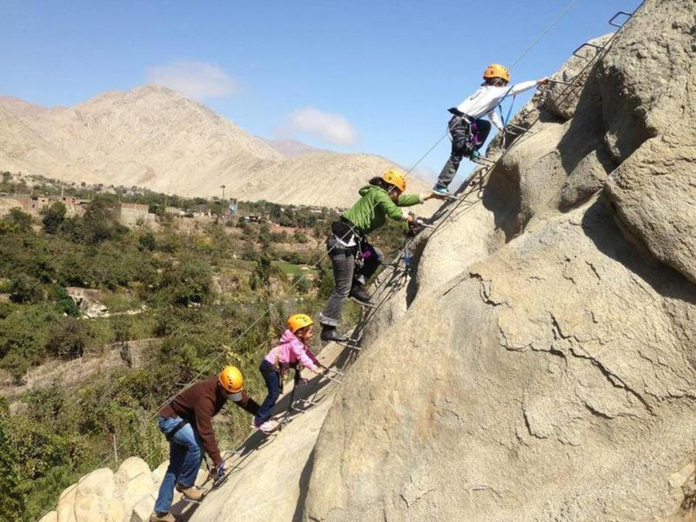

Si buscas divertirte y pasarla bien, una buena opción para despejar el estrés y sentir la adrenalina es realizar canotaje, la cual cuenta con un recorrido de 600km en el río, no necesitas saber nadar, contará con un guía que te dará las indicaciones antes de realizar este deporte y será quien te acompañe es esta gran aventura.
Requisitos:
Mayores de 8 años
Menor de 60 años
No sufrir de enfermedades respiratoria
Contar con ropa extra
Medidas de seguridad:
chaleco
remo
casco
Accesibilidad:
Guia: sí
Movilidad: sí
Duracion: 45 minutos
Precio: s/30.00 - s/35.00
Canopy
Si necesitas despejar toda esa preocupación y sentir una gran adrenalina, el Canopy es una gran opción, el cual cuenta con un recorrido de 800 metros (400 de ida y 400 de regreso), este deporte lo realizas viendo el hermoso valle de Lunahuaná.
Requisitos:
Mayores de 8 años
Menor de 60 años
No mujeres embarazadas
No sufrir de enfermedades respiratorias
Contar con ropa extra
contar con mascarilla
Medidas de seguridad:
remo
casco
Accesibilidad:
Guia: sí
Movilidad: sí (Solo para canopy dos lineas)
Duracion: menos de un minuto
Precio: s/40.00 - s/50.00
Cuatrimoto
Si quieres un paseo divertido en las riveras de las peñas puedes optar por realizar cuatrimoto, el cual cuenta con un recorrido de 5km.
Requisitos:
Mayor de 8 años
Menor de 60 años
No mujeres embarazadas
No sufrir de enfermedades respiratoria
Contar con ropa extra
Contar con mascarilla
Medidas de seguridad:
casco
Accesibilidad:
Guia: sí
Movilidad: sí
Duracion: 45 minutos
Precio: s/40.00
Rappel
Consiste en descender por una roca empleando cuerdas. Al realizarlo tenemos el control en nuestras manos, y gradualmente se va soltando la soga para ir bajando. Cuenta con 30 metros de altitud.

Requisitos:
Mayores de 8 años
Menor de 60 años
No mujeres embarazadas
No sufrir de enfermedades respiratorias
Contar con ropa extra
contar con mascarilla
Medidas de seguridad:
remo
Arnés
Accesibilidad:
Guia: sí
Movilidad: sí (Solo para canopy dos lineas)
Duracion: maximo de 10 minutos
Precio: s/40.00
Tener en cuenta lo siguiente
La movilidad solo los llevara al encuentro de cada actividad y los traera derecto a la agencia
Estar 10 minutos antes en la agencia para cualquier actividad, de lo contrario tendrá que esperar hasta la siguiente llegada de la movilidad.
Dentro de la agencia contará con loquers para que puedan guardar sus pertenencias, asimismo tendrá probadores y accesibilidad a los servicios higiénicos de manera gratuita.
Respetar todas las indicaciones que les brinda el guía.
No se puede llevar mascotas en el canotaje.
Paseo Turístico
City Tours
Recorrido paisajístico y cultural por el valle de Lunahuaná, en el cual conocerás las bodegas vitivinícolas, iglesia colonial, centros apícola, puente colgante y la casa encantada.